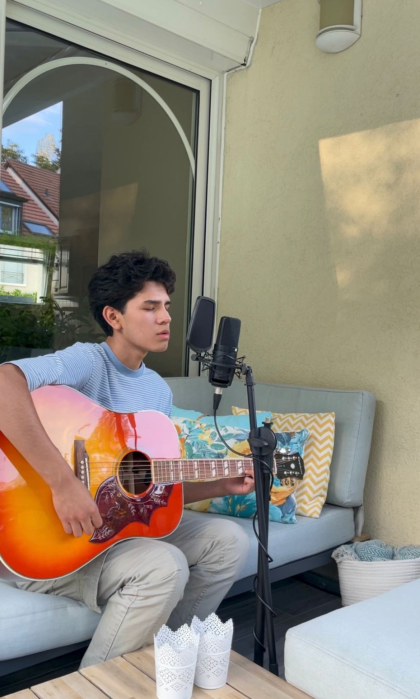
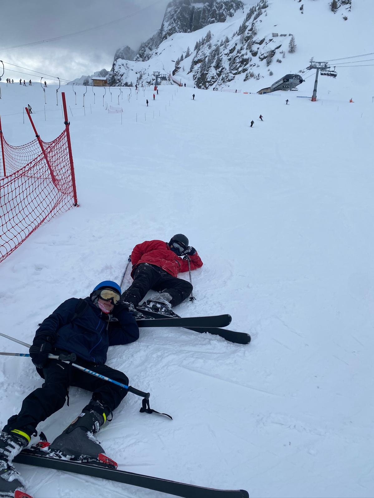
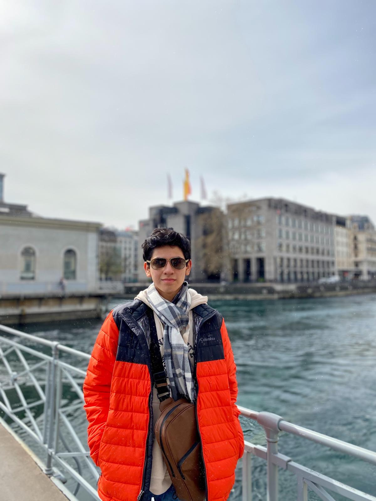
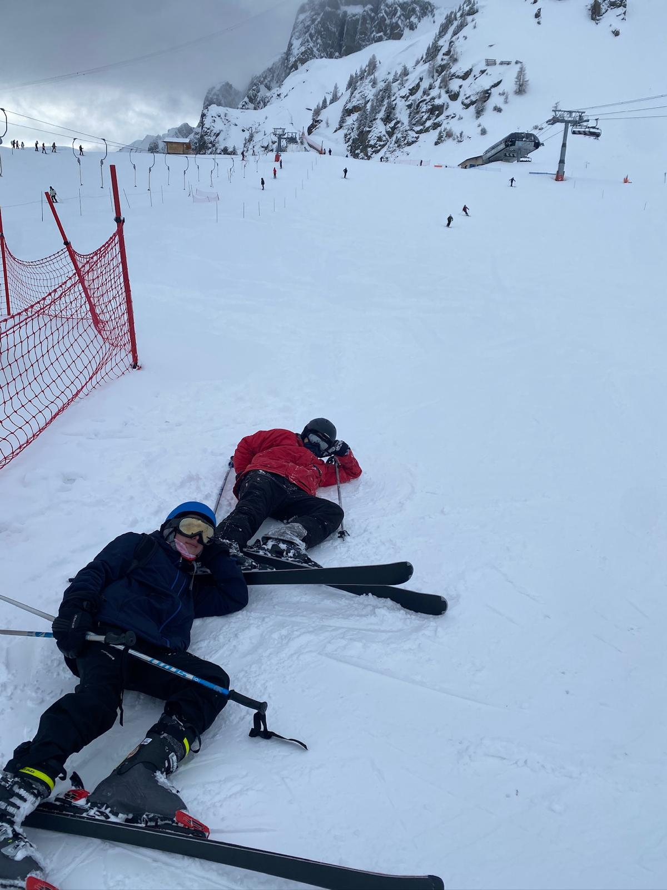
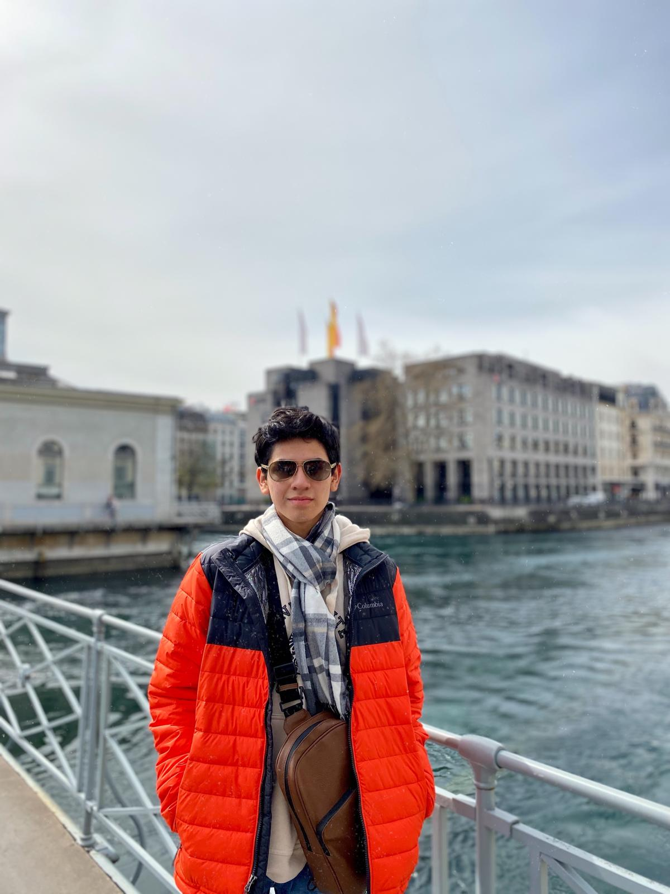
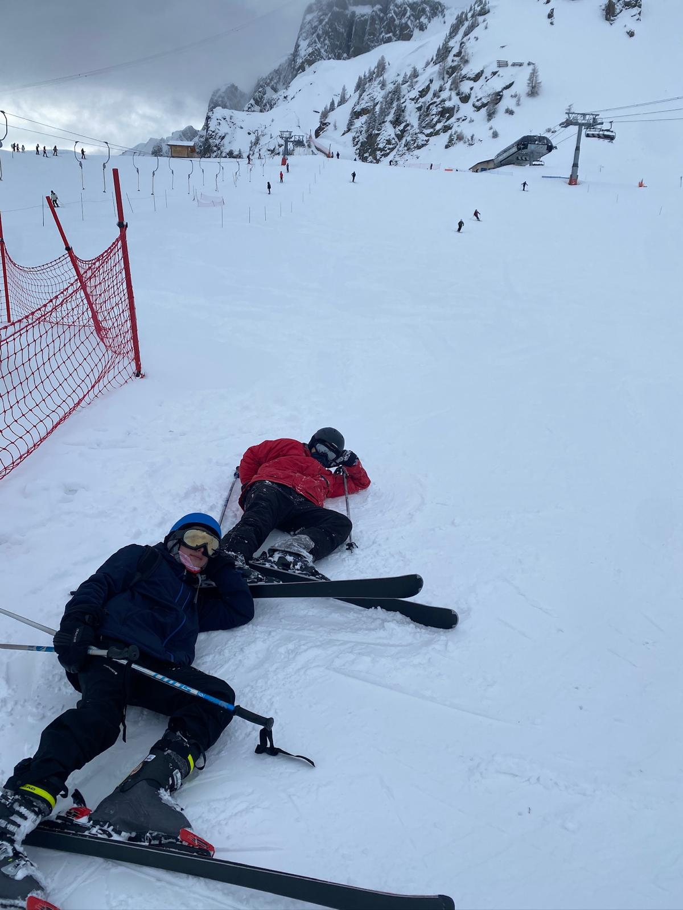
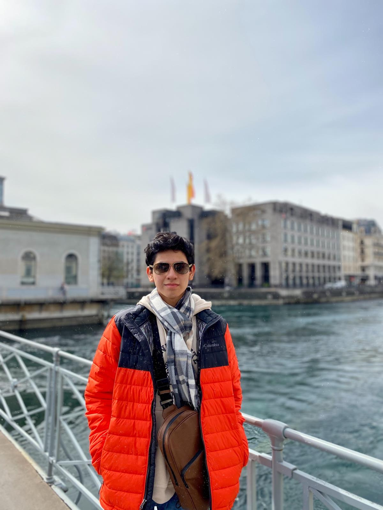

¡Un gustooo! Soy Mauricio Vásquez
Gracias por visitar esta sección. Aquí comparto un poco sobre mi trayectoria, aficiones y cómo puedes ponerte en contacto conmigo.
Currículum en PDF
Puedes revisar mi CV actualizado haciendo clic en el enlace siguiente:
Ver CVAlgunas fotos para conocerme
Además de algunas de mis pasiones:

 




